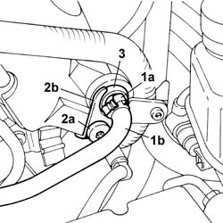

1080D44 one-way valve on oil vapour intake circuit - r+r
- Path
- Procedures > 10 ENGINE > 1080 EMISSION CONTROL SYSTEM > 1080D CRANKCASE VAPOUR/GAS RECIRCULATION SYSTEM > 1080D44 one-way valve on oil vapour intake circuit - r+r
- Kind
- repair procedure (removal / refitting; the operation number is the code)
- Applies to
- engines: 2.0 TB; all production periods
- Interactive page
- https://sloeber94.github.io/elrnDB-lThss/en/#/499206
Applies to: engines: 2.0 TB; all production periods
 Removing
Removing
 Refitting
RefittingSee in Op. 1016A40 Ignition COIL COVER on cylinder head - R.R.
1. Disconnect the band (1a) and release the pipe (1b).
2. Undo the bolt (2a) and remove the retaining bracket (2b).
3. Release the PCV valve.

Applies to: engines: 2.0 TB; all production periods
Refitting
Removing- Position the PCV valve and secure it using the bracket.
- Fasten the pipe to the valve.
See in Op. 1016A40 Ignition COIL COVER on cylinder head - R.R.